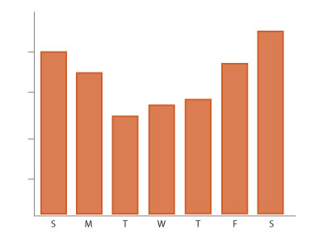
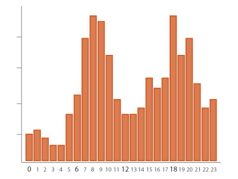
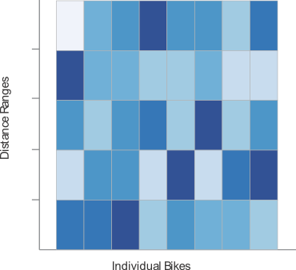

Overview Data
(mockup)



Weekly activity:
Mike Thompson
- Setup initial map and sidebar
- Setup Git for collaboration
Brian Spahr
- Began data analysis
- Built sqllite db for divvy data
Dane DeSutter
- Made Mockups for final application
- Setup planning / organization spreadsheet
Messages
Libraries Used:
Third party libraries we used include the following:
d3
leaflet
leaflet-sidebar